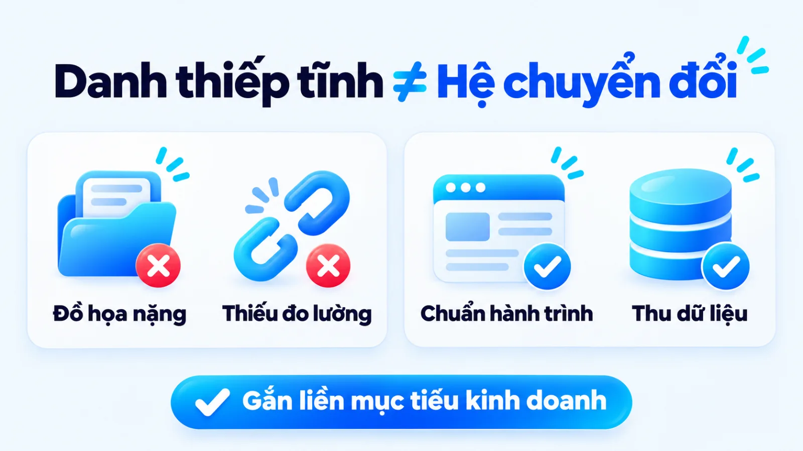
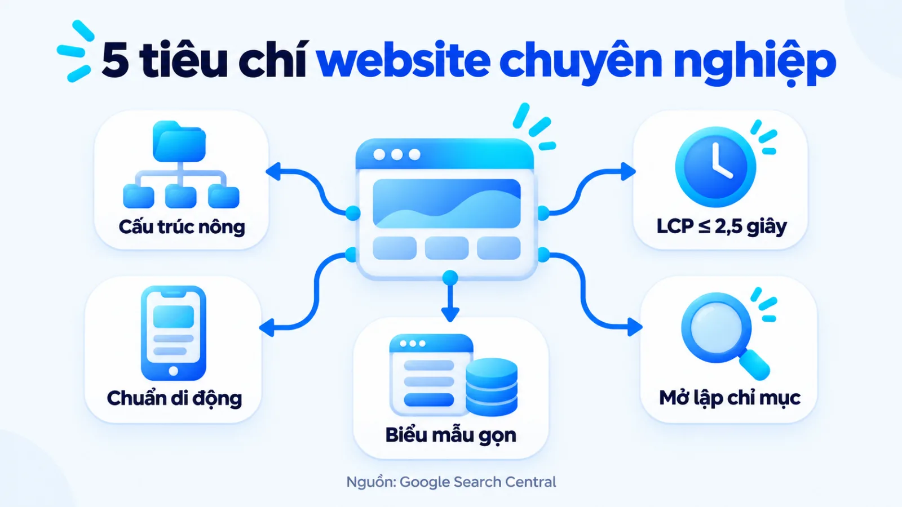
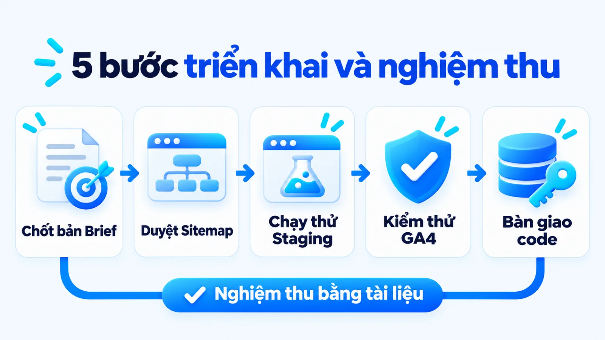
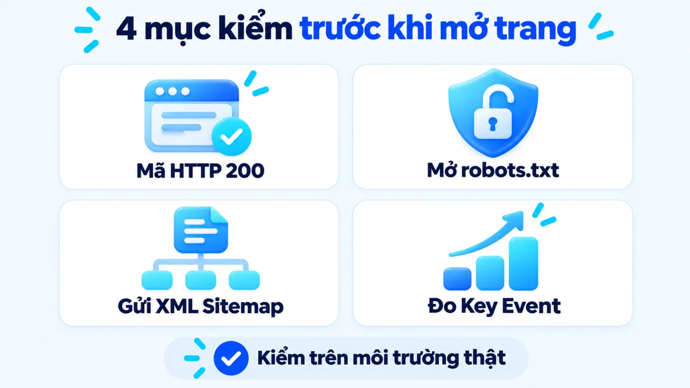
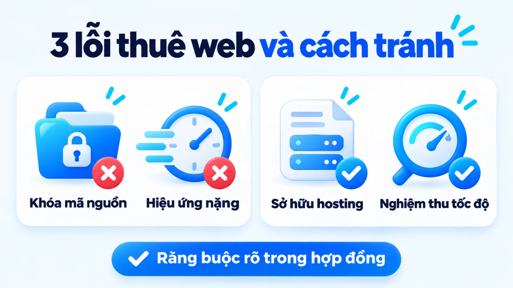

Thiết kế website cho SME: Tiêu chí và quy trình
Thiết kế website là quá trình xây dựng hạ tầng số gồm kiến trúc thông tin, giao diện trải nghiệm, mã nguồn và hệ thống đo lường nhằm chuyển đổi người truy cập thành khách hàng tiềm năng hoặc đơn hàng. Với doanh nghiệp vừa và nhỏ, quyết định làm trang web là bài toán cân nhắc giữa chi phí sở hữu dài hạn, quyền kiểm soát dữ liệu và năng lực vận hành nội bộ sau bàn giao. Nếu ký hợp đồng khi chưa khóa rõ mục tiêu chuyển đổi và chuẩn kỹ thuật, doanh nghiệp dễ nhận về một giao diện tĩnh không thể thu hút truy cập tự nhiên hay đo lường quảng cáo. Tôi là Lê Tuấn Việt, Marketing Leader tại TAKI Group. Trong bài viết này, tôi làm rõ tiêu chí chọn hình thức triển khai theo nguồn lực, các bước kiểm soát nghiệm thu và cách đọc chỉ số hiệu quả khi đưa hệ thống vào vận hành.
- Đăng ngày
- Cập nhật

Tóm tắt nhanh
- Thiết kế website doanh nghiệp là bài toán xây dựng hạ tầng thu thập khách hàng tiềm năng và dữ liệu sở hữu, không phải việc làm một tấm danh thiếp trưng bày hiệu ứng đồ họa nặng nề.
- Doanh nghiệp vừa và nhỏ nên chọn giữa nền tảng thuê bao, hệ quản trị mã nguồn mở và thiết kế website theo yêu cầu dựa trên quyền sở hữu mã nguồn, độ phức tạp nghiệp vụ và ngân sách duy trì.
- Biên bản nghiệm thu bắt buộc phải kiểm tra trạng thái lập chỉ mục HTTP 200, ngưỡng tốc độ Core Web Vitals trên thiết bị di động và các sự kiện chuyển đổi trong Google Analytics 4 trước khi thanh lý hợp đồng.
- Hiệu quả vận hành sau bàn giao cần được đọc qua ba tầng tách biệt gồm khả năng hiển thị kỹ thuật, hành vi chuyển đổi trên trang và doanh thu thực tế ghi nhận tại bộ phận bán hàng.
Mục lục bài viết8 phần
Thiết kế website doanh nghiệp là gì và cần gì
Thiết kế website doanh nghiệp là quá trình xây dựng hạ tầng số gồm kiến trúc thông tin, giao diện trải nghiệm, mã nguồn kỹ thuật và hệ thống đo lường nhằm chuyển đổi người truy cập thành khách hàng tiềm năng hoặc đơn hàng thực tế. Thay vì tạo một tấm danh thiếp trực tuyến chỉ để trưng bày hiệu ứng đồ họa, hoạt động này đặt trọng tâm vào việc tổ chức luồng thông tin khớp với hành trình ra quyết định của người mua.
Theo tiêu chuẩn khả năng tiếp cận web của W3C Web Accessibility Initiative (WAI, Sáng kiến Khả năng Tiếp cận Web thuộc Tổ chức Tiêu chuẩn Web Quốc tế W3C) cập nhật năm 2024, một trang web chuẩn mực phải được thiết kế và lập trình để mọi người dùng đều có thể nhận biết, hiểu, điều hướng và tương tác mượt mà trên nhiều thiết bị. Đặt trong bài toán kinh doanh của SME (Small and Medium-sized Enterprises, doanh nghiệp vừa và nhỏ), khả năng điều hướng mượt mà đó phải dẫn người xem đi từ bước tìm hiểu thông tin sang hành động liên hệ hoặc đặt mua.

Trước khi yêu cầu báo giá, người phụ trách cần phân biệt rõ ba mô hình trang web phổ biến theo độ phức tạp của danh mục sản phẩm, chu kỳ cân nhắc và luồng xử lý giao dịch:
- Website giới thiệu công ty (Company Profile): Phục vụ doanh nghiệp dịch vụ hoặc B2B (Business-to-Business, giao dịch giữa doanh nghiệp với doanh nghiệp) có chu kỳ cân nhắc dài, tập trung xây dựng uy tín qua hồ sơ năng lực, bài viết chuyên môn và thu thập yêu cầu tư vấn.
- Website thương mại điện tử (E-commerce): Dành cho đơn vị bán lẻ có danh mục hàng hóa lớn, tích hợp bộ lọc thuộc tính, giỏ hàng, tính phí vận chuyển và cổng thanh toán tự động ngay trong một phiên truy cập.
- Trang đích quảng cáo (Landing Page): Trang đơn độc lập phục vụ một chiến dịch ngắn hạn, loại bỏ các thanh điều hướng phụ để dồn sự chú ý vào một nút kêu gọi hành động duy nhất.
Ba điều kiện cần chốt trước khi thiết kế web
Tại thị trường Việt Nam, nhiều chủ doanh nghiệp đầu tư làm trang web chỉ để hoàn tất thủ tục hiện diện thương hiệu nhưng bỏ trống cấu trúc danh mục theo nhu cầu tìm kiếm. Hệ quả là khi triển khai chiến lược digital marketing, cả kênh quảng cáo trả phí lẫn tìm kiếm tự nhiên đều không giữ được khách hàng ở lại trang. Ba điều kiện nền tảng cần khóa chặt trước khi bắt đầu thiết kế web gồm:
- Mục tiêu chuyển đổi gắn với chân dung người mua: Xác định rõ người truy cập vào trang cần đọc thông tin gì để tháo gỡ rào cản tâm lý và hành động chính bạn muốn họ thực hiện là gọi điện, để lại biểu mẫu hay đặt hàng trực tiếp.
- Nguồn lực vận hành nội dung sau bàn giao: Phân công cụ thể nhân sự phụ trách cập nhật bài viết, hình ảnh sản phẩm và tiếp nhận thông tin khách hàng đổ về mỗi ngày để trang web không bị bỏ hoang sau khi nghiệm thu.
- Ngân sách tổng sở hữu dài hạn: Tính đủ chi phí xây dựng ban đầu cùng các khoản duy trì hàng năm gồm tên miền, máy chủ lưu trữ (hosting), chứng chỉ bảo mật và phí nâng cấp tính năng khi quy mô kinh doanh mở rộng.
Phân biệt ba hình thức dịch vụ thiết kế web
Ba hình thức dịch vụ thiết kế web phổ biến cho doanh nghiệp vừa và nhỏ gồm thuê bao nền tảng dựng sẵn, tùy biến trên hệ quản trị mã nguồn mở và lập trình riêng theo yêu cầu. Ba phương án này khác nhau cốt lõi ở quyền sở hữu mã nguồn, thời gian đưa vào vận hành và khả năng mở rộng cấu trúc kỹ thuật.
Không có phương án công nghệ nào tối ưu cho mọi giai đoạn phát triển. Người ra quyết định cần đối chiếu hạn mức ngân sách, năng lực kỹ thuật nội bộ và yêu cầu tích hợp dữ liệu để chọn hình thức phù hợp theo bảng so sánh ba cột dưới đây.
| Hình thức | Phù hợp khi | Đánh đổi cần chấp nhận |
|---|---|---|
| Nền tảng SaaS thuê bao | Bán lẻ cần chạy nhanh, sẵn giỏ hàng và không có nhân sự kỹ thuật quản lý máy chủ | Phụ thuộc hệ sinh thái nhà cung cấp, không nắm mã nguồn gốc và khó tùy biến cấu trúc SEO sâu |
| Tùy biến trên CMS mở | SME làm trang công ty, nội dung SEO hoặc bán hàng vừa phải, cần làm chủ mã nguồn | Cần kiểm soát chất lượng giao diện mẫu, tránh cài quá nhiều tiện ích mở rộng làm chậm tốc độ tải |
| Lập trình theo yêu cầu | Doanh nghiệp có luồng nghiệp vụ riêng, tính giá đa biến hoặc tích hợp sâu với phần mềm nội bộ | Ngân sách đầu tư ban đầu cao hơn, thời gian phân tích thiết kế lâu và cần quy trình nghiệm thu chặt |
Giới hạn khi đọc bảng: ranh giới giữa hệ quản trị nội dung mã nguồn mở (CMS, Content Management System như WordPress) và lập trình riêng đang thu hẹp dần nhờ các phương pháp phát triển hiện đại. Tuy nhiên, nếu chọn nền tảng thuê bao SaaS (Software as a Service, phần mềm dạng dịch vụ), doanh nghiệp phải chấp nhận rủi ro chi phí chuyển đổi cao khi muốn di dời toàn bộ cấu trúc URL sang hệ thống tự chủ sau này.
Khi nào chọn thiết kế website theo yêu cầu
Doanh nghiệp chỉ nên chọn thiết kế website theo yêu cầu khi luồng giao dịch có quy tắc nghiệp vụ đặc thù hoặc cần kiểm soát tuyệt đối hiệu năng tải trang, bảo mật và cấu trúc dữ liệu mà các gói dựng sẵn không đáp ứng được. Nếu chỉ cần một trang giới thiệu dịch vụ cơ bản, việc đặt lập trình mới hoàn toàn từ đầu theo cách truyền thống thường kéo dài thời gian chờ đợi và chiếm dụng vốn lưu động.
Bài toán chi phí và thời gian của hình thức làm riêng hiện đã thay đổi đáng kể khi kết hợp quy trình hoạch định chuẩn với công nghệ mới. Trong các dự án ứng dụng AI (Artificial Intelligence, trí tuệ nhân tạo) và Vibe Coding (phương pháp lập trình định hướng bằng ngôn ngữ tự nhiên cùng AI) do tôi triển khai để xây dựng 5 website cùng hệ thống quản trị vận hành, khách hàng đã rút ngắn 90% thời gian hoặc tiết kiệm 95% chi phí phát triển, đồng thời chuẩn hóa quy trình cho hơn 50 doanh nghiệp. Dù vậy, điều kiện bắt buộc để cách làm này phát huy hiệu quả là phải có người nắm vững kiến trúc thông tin kiểm soát đầu vào và thực hiện kiểm thử kỹ thuật, bảo mật trước khi đưa lên môi trường thật.
Năm tiêu chí thiết kế website chuyên nghiệp
Một dự án thiết kế website chuyên nghiệp được đánh giá qua năm tiêu chí kỹ thuật và chuyển đổi gồm cấu trúc thông tin theo ý định tìm kiếm, tốc độ tải đạt ngưỡng Core Web Vitals, tương thích thiết bị di động, nền tảng lập chỉ mục sạch và hệ thống thu thập dữ liệu người dùng. Đây là bộ khung để doanh nghiệp chấm điểm nhà thầu và nghiệm thu sản phẩm bàn giao.

Nhiều bản hợp đồng làm web chỉ mô tả chung chung rằng trang web sẽ chuẩn SEO và tải nhanh mà không gắn với bất kỳ con số đo lường nào. Để khóa trách nhiệm thực thi, chủ doanh nghiệp cần đưa năm tiêu chí định lượng và định tính sau vào phụ lục kỹ thuật:
- Kiến trúc thông tin và luồng điều hướng rõ ràng: Tổ chức cây danh mục nông, phân nhóm trang dịch vụ và bài viết theo đúng câu hỏi trong hành trình mua để cả người đọc lẫn hệ thống AI dễ dàng truy xuất câu trả lời chính xác.
- Hiệu năng và tốc độ tải đạt chuẩn Core Web Vitals: Theo tài liệu kỹ thuật cập nhật năm 2024 của Google Search Central về Core Web Vitals áp dụng cho dữ liệu người dùng thực tế toàn cầu trên di động và máy tính, trang web cần đạt ngưỡng tốt ở phân vị thứ 75 của tổng lượt tải trang với ba chỉ số: LCP (Largest Contentful Paint, thời gian hiển thị nội dung lớn nhất) trong vòng 2,5 giây, INP (Interaction to Next Paint, độ trễ phản hồi tương tác) từ 200 mili giây trở xuống và CLS (Cumulative Layout Shift, mức dịch chuyển bố cục tích lũy) không vượt quá 0,1.
- Trải nghiệm đồng nhất trên thiết bị di động: Theo hướng dẫn thực hành năm 2024 của Google Search Central về Mobile-first indexing (cơ chế lập chỉ mục ưu tiên bản di động), giao diện đáp ứng (Responsive Web Design) trên điện thoại phải hiển thị đầy đủ nội dung chính, các thẻ meta và dữ liệu có cấu trúc (Schema) đồng nhất với phiên bản máy tính để bàn.
- Hạ tầng lập chỉ mục sạch cho công cụ tìm kiếm: Theo quy định kỹ thuật năm 2024 của Google Search Essentials, các trang mục tiêu không được chặn Googlebot và phải trả về mã trạng thái HTTP 200 kèm giao thức bảo mật HTTPS. Đồng thời, theo hướng dẫn xây dựng sitemap của Google Search Central năm 2024, mỗi tệp XML sitemap đơn lẻ chỉ chứa tối đa 50.000 URL chuẩn (canonical) với dung lượng giải nén không quá 50MB.
- Điểm chạm chuyển đổi và thu thập dữ liệu sở hữu: Bố trí biểu mẫu đăng ký ít ma sát ở vị trí dễ thao tác trên màn hình cảm ứng, phục vụ trực tiếp cho việc thu thập dữ liệu first-party data và làm nền tảng để doanh nghiệp xây dựng hệ thống content marketing bền vững.
Quy trình tư vấn thiết kế website 5 bước
Quy trình tư vấn thiết kế website chuẩn cho doanh nghiệp vừa và nhỏ gồm năm bước nối tiếp từ chốt mục tiêu chuyển đổi, lập sơ đồ cấu trúc trang, dựng giao diện và mã nguồn, cài đặt đo lường nghiệm thu đến bàn giao quyền quản trị. Mỗi bước bắt buộc phải khép lại bằng một tài liệu hoặc môi trường đầu ra kiểm tra được.

Bước 1: Chốt mục tiêu chuyển đổi và chân dung mua
Bước đầu tiên là xác định vai trò của trang web trong phễu kinh doanh, phân khúc khách hàng trọng tâm và hành động chuyển đổi cần thu thập ở từng nhóm trang. Ở giai đoạn này, người làm kế hoạch cần đặt trang web nằm trong bức tranh tổng thể của hoạt động tư vấn chiến lược marketing để tránh tình trạng làm web xong nhưng thông điệp trên trang lệch hẳn với định vị sản phẩm ngoài thị trường.
Đầu ra: Bản yêu cầu nghiệp vụ (Brief) ghi rõ mục tiêu kinh doanh, chân dung người mua và danh sách các hành động chuyển đổi cần theo dõi trên trang.
Bước 2: Lập sơ đồ cấu trúc trang và khung nội dung
Từ mục tiêu đã khóa, đội ngũ tiến hành xây dựng cây thư mục URL theo cụm chủ đề và vẽ bản khung bố cục (Wireframe) cho từng loại trang mẫu gồm trang chủ, trang danh mục, trang chi tiết sản phẩm hoặc dịch vụ và trang bài viết. Việc chốt khung nội dung trước khi thiết kế màu sắc giúp định hình sẵn luồng dẫn dắt tâm lý và tạo chuẩn đầu vào thống nhất cho khâu viết content marketing sau này.
Đầu ra: Tài liệu sơ đồ cấu trúc trang (Sitemap) phân cấp nông và bộ khung bố cục Wireframe cho các trang chính đã được hai bên ký duyệt.
Bước 3: Thiết kế giao diện và dựng mã nguồn chuẩn
Nhà thầu chuyển hóa bản khung Wireframe thành giao diện đồ họa (UI, User Interface) mang nhận diện thương hiệu của doanh nghiệp, sau đó lập trình thành mã nguồn chạy trên máy chủ thử nghiệm (Staging). Trong bước này, lập trình viên phải tuân thủ thứ bậc thẻ tiêu đề từ H1 đến H3, nén dung lượng hình ảnh sang định dạng WebP và bảo đảm độ tương phản chữ dễ đọc trên màn hình điện thoại.
Đầu ra: Đường dẫn môi trường chạy thử nghiệm hiển thị đúng bố cục trên cả máy tính lẫn điện thoại và vượt qua bài kiểm tra khả năng truy cập.

Bước 4: Cài đặt đo lường và kiểm thử nghiệm thu
Trước khi mở trang web cho công chúng, bộ phận kỹ thuật và marketing phối hợp cài đặt Google Search Console cùng Google Analytics 4 (GA4, nền tảng phân tích dữ liệu web của Google). Theo tài liệu năm 2024 của Google Analytics Help về sự kiện trong GA4, mọi thao tác được ghi nhận là sự kiện (Event), còn những hành vi mang lại giá trị kinh doanh trực tiếp như gửi biểu mẫu hoặc đặt hàng phải được đánh dấu là sự kiện chính (Key Event).
Đầu ra: Biên bản nghiệm thu kỹ thuật xác nhận trang đạt ngưỡng Core Web Vitals, trả về mã HTTP 200, gỡ lệnh chặn lập chỉ mục trong robots.txt và ghi nhận đúng sự kiện Key Event trên GA4.
Bước 5: Bàn giao mã nguồn và hướng dẫn quản trị
Bước cuối cùng là chuyển giao toàn bộ quyền quản trị cao nhất cho chủ doanh nghiệp và đào tạo nhân sự nội bộ cách đăng tải nội dung, sao lưu dữ liệu định kỳ. Từ thực tế tham gia xây dựng và chuẩn hóa quy trình marketing, vận hành cho hơn 50 doanh nghiệp, tôi nhận thấy việc khóa chặt danh mục tài khoản bàn giao ngay ở bước thanh lý hợp đồng là chốt chặn quan trọng giúp SME giữ quyền tự chủ tài sản số khi thay đổi nhân sự hoặc nhà thầu.
Đầu ra: Hồ sơ bàn giao quyền quản trị cao nhất (tên miền, máy chủ, CMS, công cụ đo lường), bộ mã nguồn gốc và tài liệu hướng dẫn vận hành.
Ba lỗi thường gặp khi thuê dịch vụ làm website
Ba sai lầm phổ biến khiến doanh nghiệp vừa và nhỏ tốn kém chi phí sửa chữa hoặc phải đập đi xây lại khi thuê dịch vụ làm website là chọn gói giá rẻ bị khóa quyền sở hữu mã nguồn, duyệt giao diện theo cảm tính mà bỏ qua cấu trúc tìm kiếm, và thanh lý hợp đồng khi chưa kiểm tra kỹ thuật lập chỉ mục lẫn đo lường.
Vì sao một trang web nhìn rất bắt mắt trong buổi thuyết trình nghiệm thu nhưng khi đưa vào chạy thực tế lại không mang về khách hàng? Nguyên nhân nằm ở chỗ người duyệt chỉ nhìn vào phần đồ họa bề nổi trên màn hình máy tính lớn mà bỏ qua cơ chế vận hành bên dưới. Ba lỗi thực thi thường làm đứt gãy hiệu quả đầu tư gồm:
- Chọn gói đóng gói giá rẻ nhưng mất quyền sở hữu mã nguồn: Doanh nghiệp không quy định rõ quyền truy cập máy chủ, cơ sở dữ liệu và quyền chuyển nhà cung cấp trong hợp đồng, dẫn tới việc bị thu phí nâng cấp cao hoặc mất trắng dữ liệu khi ngừng gia hạn.
- Duyệt màu sắc và hiệu ứng nặng mà bỏ trống kiến trúc danh mục: Trang chủ nhồi nhiều video tự chạy làm hỏng chỉ số LCP (vượt ngưỡng 2,5 giây) và gây nhảy khung hình CLS (vượt mức 0,1) trên điện thoại, đồng thời thiếu các trang giải quyết câu hỏi mua hàng khi doanh nghiệp kết hợp SEO và quảng cáo Google để kéo khách truy cập.
- Nhận bàn giao giao diện nhưng quên kiểm tra tệp robots.txt và mã đo lường: Lập trình viên giữ nguyên lệnh chặn thu thập dữ liệu từ môi trường thử nghiệm sang môi trường thật khiến trang không đạt điều kiện lập chỉ mục HTTP 200, hoặc không gắn sự kiện theo dõi biểu mẫu làm mất toàn bộ dữ liệu tối ưu chiến dịch.

Đối chiếu hai cách thuê dịch vụ làm website của doanh nghiệp nội thất B2B
Trong một tình huống giả định tại Hà Nội, một xưởng thiết kế thi công nội thất văn phòng cần làm mới website để thu thập yêu cầu báo giá. Ở cách làm sai trước đó, công ty chọn gói làm nhanh không bàn giao mã nguồn, gom toàn bộ dịch vụ vào một trang giới thiệu chung và dùng ảnh dung lượng lớn chưa nén khiến người xem trên điện thoại thoát trang trước khi biểu mẫu kịp hiển thị. Khi chuyển sang cách làm đúng trong ví dụ biên tập này, người phụ trách marketing yêu cầu tách riêng từng trang giải pháp theo diện tích văn phòng, khóa điều khoản bàn giao quyền quản trị máy chủ trong hợp đồng, ép tốc độ tải LCP xuống dưới ngưỡng 2,5 giây và gắn sự kiện Key Event đo lượt gửi yêu cầu khảo sát mặt bằng trước khi nghiệm thu.
Khoản tiền tiết kiệm được từ một gói làm web thiếu cấu trúc kỹ thuật thường nhỏ hơn rất nhiều so với ngân sách quảng cáo bị lãng phí khi dẫn khách vào một trang đích chậm và không đo được hành vi. Bàn giao giao diện chưa phải là bàn giao hệ thống.
Cách đo hiệu quả website sau khi bàn giao
Hiệu quả kinh doanh của website sau khi bàn giao cần được đo lường qua khung ba tầng nối tiếp gồm tầng khả năng lập chỉ mục và tương tác, tầng hành vi chuyển đổi đạt chuẩn trên trang, và tầng doanh thu thực tế kèm chi phí trên mỗi khách hàng tiềm năng. Cách phân lớp này giúp đội ngũ khoanh vùng chính xác điểm nghẽn nằm ở kỹ thuật, nội dung hay khâu bán hàng.
Theo phương pháp phân tích phễu trải nghiệm năm 2023 của tổ chức nghiên cứu Nielsen Norman Group, hành vi người dùng trên trang web được chia thành chuyển đổi chính (macro conversion) tạo ra kết quả kinh doanh trực tiếp và chuyển đổi vi mô (micro conversion) gồm các bước nhỏ dẫn đường tới mục tiêu chính. Để tránh nhầm lẫn giữa lượt xem trang với hiệu quả tài chính, tôi tách hệ thống báo cáo định kỳ thành ba tầng theo bảng công cụ dưới đây.
| Tầng chỉ số | Cách tính và nguồn dữ liệu | Giới hạn khi đọc |
|---|---|---|
| Tầng 1: Hiển thị, tương tác | Số trang lập chỉ mục HTTP 200, lượt nhấp tự nhiên trên Search Console và phiên tương tác GA4 | Phản ánh sức khỏe kỹ thuật và sức hút thông điệp đầu phễu, không chứng minh được doanh thu |
| Tầng 2: Chuyển đổi trên web | Tỷ lệ hoàn tất biểu mẫu, nhấp nút gọi, tải báo giá được đánh dấu Key Event trên GA4 | Có thể lệch với số khách thật do người dùng bấm lặp hoặc chặn trình theo dõi trên trình duyệt |
| Tầng 3: Kết quả kinh doanh | Số khách tiềm năng đạt chuẩn, CPL (chi phí mỗi khách tiềm năng) và doanh thu trên CRM | Phụ thuộc lớn vào tốc độ phản hồi, kỹ năng tư vấn của đội bán hàng và chính sách giá |
Giới hạn khi đọc bảng: các chỉ số ở cả ba tầng cần được đối chiếu trong cùng một kỳ đo (theo tuần hoặc theo tháng) và so sánh trực tiếp với mốc cơ sở (baseline) trước khi cải tiến của chính doanh nghiệp. Nếu Tầng 1 tăng nhưng Tầng 2 đi ngang, đội ngũ cần rà soát lại thông điệp trên trang và cách đo lường micro conversion trên website để tìm xem người đọc đang bỏ cuộc ở bước xem bảng giá hay bước điền thông tin. Ngược lại, nếu Tầng 2 có nhiều sự kiện Key Event nhưng Tầng 3 trong CRM (Customer Relationship Management, hệ thống quản lý quan hệ khách hàng) không có hợp đồng, điểm nghẽn nằm ở chất lượng tệp truy cập hoặc quy trình xử lý cuộc gọi của bộ phận kinh doanh.
Câu hỏi thường gặp về thiết kế website
Khi nào doanh nghiệp chưa nên đầu tư làm website mới?
Doanh nghiệp chưa nên đầu tư làm website mới khi chưa xác định rõ sản phẩm chủ lực, chân dung khách hàng mục tiêu hoặc chưa có nhân sự tiếp nhận và xử lý thông tin hỏi mua đổ về. Trong giai đoạn thử nghiệm thị trường ngắn hạn với ngân sách hẹp, bạn có thể dùng một trang đích đơn lẻ hoặc kênh mạng xã hội để kiểm chứng sức mua trước khi xây dựng hệ thống hoàn chỉnh.
Làm sao tránh phát sinh chi phí ẩn khi thuê làm website?
Để tránh phát sinh chi phí ẩn khi thuê làm website, hợp đồng cần tách bạch khoản phí xây dựng ban đầu với chi phí duy trì định kỳ hàng năm gồm tên miền, máy chủ lưu trữ, chứng chỉ bảo mật và bản quyền công cụ. Đồng thời, doanh nghiệp phải yêu cầu đối tác liệt kê rõ giới hạn băng thông, phạm vi tính năng bàn giao và biểu phí hỗ trợ kỹ thuật khi cần chỉnh sửa ngoài thời hạn bảo hành.
Cần kiểm tra chỉ số kỹ thuật nào trước khi nhận bàn giao?
Trước khi ký biên bản nhận bàn giao, doanh nghiệp cần kiểm tra các trang chính trả về mã trạng thái HTTP 200, đã gỡ lệnh chặn thu thập dữ liệu trong tệp robots.txt, có sơ đồ XML sitemap hợp lệ và chạy trên giao thức bảo mật HTTPS. Ngoài ra, trang web trên thiết bị di động phải đạt ngưỡng tốc độ Core Web Vitals của Google và ghi nhận chính xác sự kiện chuyển đổi thử nghiệm trong Google Analytics 4.
Nên yêu cầu bàn giao những tài khoản nào khi nghiệm thu?
Khi nghiệm thu, chủ doanh nghiệp bắt buộc phải đứng tên chính chủ và nắm quyền quản trị cao nhất đối với bốn nhóm tài sản gồm tài khoản quản lý tên miền, tài khoản máy chủ lưu trữ kèm bộ mã nguồn gốc, tài khoản quản trị nội dung và hệ thống đo lường. Nếu chỉ nhận một tài khoản biên tập phụ thuộc vào máy chủ của nhà cung cấp, bạn sẽ đối mặt với rủi ro bị khóa dữ liệu khi muốn đổi đối tác vận hành.
Vì sao số lượt điền form trên GA4 lệch với dữ liệu CRM?
Số liệu sự kiện chính trên Google Analytics 4 thường lệch so với danh sách khách hàng trong hệ thống quản lý quan hệ khách hàng do người dùng cài trình chặn theo dõi, bấm nút gửi nhiều lần trong một phiên hoặc đứt kết nối mạng khi truyền dữ liệu. Do đó, người phụ trách marketing nên dùng GA4 để đối chiếu xu hướng thu hút giữa các kênh và lấy số liệu thực tế trong CRM làm căn cứ chốt hiệu quả kinh doanh.
Website doanh nghiệp B2B khác gì website bán lẻ B2C?
Website doanh nghiệp B2B và website bán lẻ B2C khác nhau cốt lõi ở độ dài chu kỳ ra quyết định và luồng hoàn tất giao dịch trên trang. Trong khi trang B2C ưu tiên bộ lọc sản phẩm trực quan, giỏ hàng và thanh toán tự động ngay trong một phiên truy cập, thì trang B2B phải cung cấp kiến trúc nội dung giải thích giải pháp theo ngành, hồ sơ năng lực, tài liệu kỹ thuật cùng biểu mẫu đặt lịch tư vấn cho nhiều cấp phê duyệt.
Kết luận
Đầu tư thiết kế website mang lại giá trị kinh doanh khi doanh nghiệp coi trang web là một hạ tầng chuyển đổi có kiến trúc thông tin rõ ràng, tốc độ tải đạt chuẩn kỹ thuật và quyền sở hữu dữ liệu minh bạch. Sự khác biệt giữa một khoản chi phí mất đi và một tài sản số sinh lời nằm ở khâu khóa yêu cầu nghiệp vụ trước khi ký hợp đồng cùng bước kiểm thử nghiệm thu chặt chẽ.
Ngay trong tuần này, bạn có thể tự kiểm tra trang web hiện tại hoặc bản đề xuất của nhà thầu bằng cách mở Google Search Console xem tỷ lệ trang đạt mã trạng thái HTTP 200, thử thao tác gửi biểu mẫu trên điện thoại di động và đối chiếu xem mỗi hành động hỏi mua đã được ghi nhận thành sự kiện chính trong báo cáo hay chưa.
Khi doanh nghiệp cần mở rộng nhiều dòng sản phẩm, kết nối dữ liệu tự động từ trang web về hệ thống quản lý bán hàng hoặc xây dựng cụm nội dung tìm kiếm quy mô lớn, việc chỉnh sửa rời rạc từng giao diện lẻ sẽ không còn đủ đáp ứng mà đòi hỏi một hệ thống hoạch định và đo lường đồng bộ ngay từ gốc. Bạn có thể tham khảo thêm các khung kiến thức thực thi khác tại chuyên mục Marketing trên website của tôi.
Trang web doanh nghiệp của bạn đang đóng vai trò tạo ra khách hàng tiềm năng đạt chuẩn mỗi tháng, hay vẫn dừng ở một kênh giới thiệu thông tin tĩnh chưa gắn với chỉ số kinh doanh thực tế?